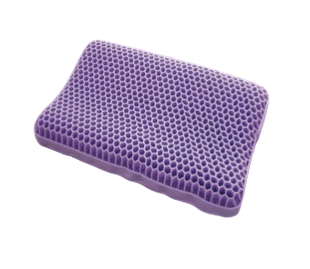
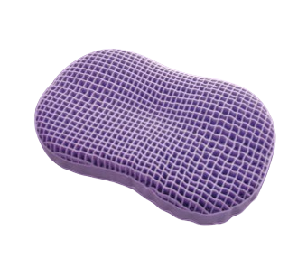

夢重力マクラ
夢の中で無重力体験を
ギャラリー

夢重力枕（Zero gravity）は、柔らかく衛生的な新素材TPE（ゲル構造）を採用した新しい寝具素材です。 ハニカムパターンのグリッド と低刺激性換気ラテックスにより優れた弾力性と柔軟性を実現しています。

これにより、従来のウレタンフォームやファイバーに代わる圧力分散と無重力のような寝心地を提供します。 さらに抜群の通気性と吸湿発散性により、頭部の熱を抑え、寝返りを減らすことができます。 仰向けや横向きなど様々な睡眠姿勢に対応し、180度回転で2段階の高さ調整が可能です。
夢重力枕（Zero gravity）は、柔らかく衛生的な新素材TPE（ゲル構造）を採用した新しい寝具素材です。
ハニカムパターンのグリッド と低刺激性換気ラテックスにより優れた弾力性と柔軟性を実現しています。
これにより、従来のウレタンフォームやファイバーに代わる圧力分散と無重力のような寝心地を提供します。
さらに抜群の通気性と吸湿発散性により、頭部の熱を抑え、寝返りを減らすことができます。 仰向けや横向きなど様々な睡眠姿勢に対応し、180度回転で2段階の高さ調整が可能です。
夢重力マクラの特徴
一晩中涼しい
ハニカムパターングリッドの層が、抜群の通気性を実現し 、吸湿発散性が高いカバーも併せて使用することで 一晩中涼しく快適に過ごすことができる。
圧力分散＋夢重力サポート
ハニカムパターンのグリッドと低刺激性換気ラテックスは、 柔らかさとサポートの理想的なバランスを取り、夢重力で快適な睡眠のサポート。
疲労回復
科学が証明する快眠の鍵。最適な高さと弾力が、 首と脊椎を完璧にサポート。深い眠りがもたらす究極の疲労回復。 あなたの健康は、この枕から始まる。
私たちについて
夢重力は、快適な睡眠を追求するために開発されたマクラです。私たちは科学的な研究に基づき、最高品質のマクラを提供しています。お客様一人ひとりの健康と快適な睡眠をサポートすることを使命としています。
お客様にご満足いただけない場合は、商品をご返品いただけます。その際、全額返金を保証いたしますので、どうぞご安心してご購入ください。
よくある質問
夢重力枕の保証期間はどれくらいですか？
購入日から1年間の保証期間を設けております。製品に問題がございましたら、お問い合わせください。
枕の高さは調整可能ですか？
はい、夢重力枕は高さ調整が可能で、お客様の好みに合わせて最適な高さに設定できます。
洗濯はできますか？
カバーは取り外して洗濯可能です。詳しい洗濯方法は取扱説明書をご参照ください。